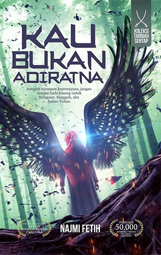
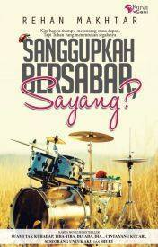
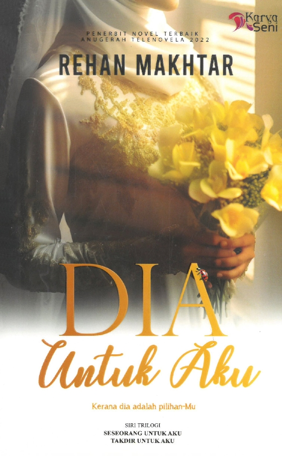
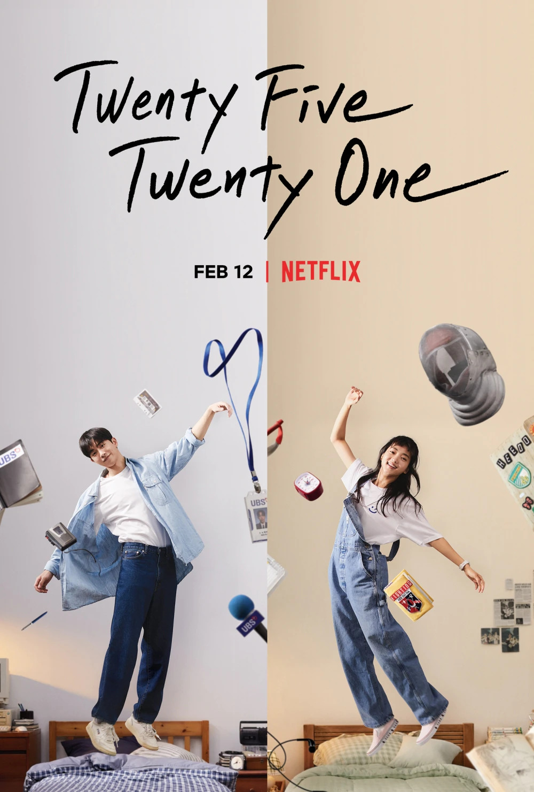

Hello! My name is'Ainul Wafa Binti Ismail Nasaruddin or
better known as fafa.
Here's more details about me
| Novels | Rate | Details |  | 8/10 | The story of Ratna, a woman with a seemingly perfect appearance but a troubled past. The novel explores themes of identity, societal expectations, and self-discovery, revealing the contrast between appearances and reality. |
|---|---|---|
|  | 9.5/10 | The story follows Qaiser Wardah, a visually impaired woman, and Tengku Cairel, a man who initially feels pity for her but gradually develops deeper feelings. Their relationship faces numerous challenges, including past secrets and societal expectations, testing their patience and commitment to each other. The novel explores themes of love, sacrifice, and resilience in the face of adversity. |  | 8.5/10 | The story revolves around Taufiq, a man who agrees to an arranged marriage chosen by his mother. However, his bride-to-be runs away on their wedding day, leaving him heartbroken. Later, Taufiq meets Johanees, a woman who captivates his heart. Despite their age difference and various challenges, they develop a deep bond. However, Johanees is forced to leave Taufiq to fulfill her father's dying wish to marry someone else. The novel explores themes of love, sacrifice, and destiny. |
| K-Drama | Rate | Details |  | 9.5/10 | 2022 South Korean drama about love, dreams, and friendships during the 1990s financial crisis. It follows Na Hee-Do, a passionate fencer, and Baek Yi-Jin, a young man rebuilding his life after his family’s financial downfall. Their deep bond evolves as they navigate life's challenges. |
|---|---|---|
| 10/10 | The series follows Jin Ho-Gae, a detective with sharp investigative skills, and Bong Do-Jin, a compassionate firefighter. Together, they solve cases and save lives, highlighting the challenges and dangers they face in their duty. | 9/10 | The story centers on Baek Beom (played by Jung Jae-Young), a seasoned forensic doctor with a sharp mind but a gruff demeanor. He is known for his exceptional skills in performing autopsies and uncovering the truth behind deaths |